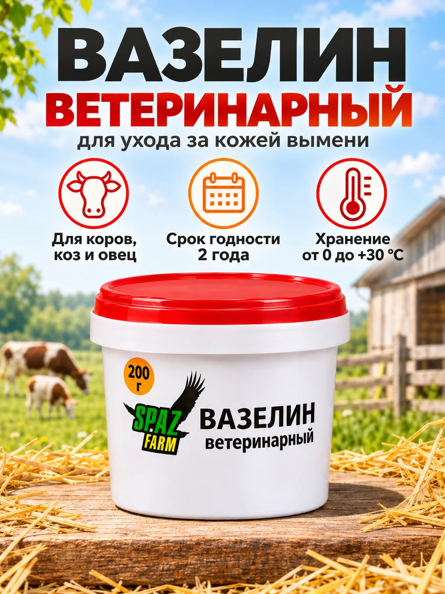

Сухость и трещинки на сосках зимой: уход и тревожные признаки
Зимой кожа вымени страдает сильнее. Разбираем, что в гигиене доения влияет на её состояние и какие признаки означают, что пора звать ветеринара.
Коротко
- Состояние кожи вымени зависит не только от средств ухода, но и от того, как организовано доение.
- Грязные салфетки, изношенная сосковая резина и неполное выдаивание — известные факторы риска.
- Массаж вымени перед доением занимает 40–90 секунд, преддоильная обработка — 20–30 секунд.
- Вытирать соски нужно сухими одноразовыми салфетками, отдельными для каждого животного.
- Отёк, болезненность, изменение цвета молока, сгустки и температура — повод немедленно вызвать ветеринара, а не греть вымя.
Почему зимой тяжелее
Зимой на кожу действует сразу несколько факторов: мороз и ветер по дороге от доильного места, сухой воздух в помещении, частое намокание и вытирание. Кожа теряет влагу, становится жёсткой, и на ней легче появляются трещинки.
Средство ухода здесь делает свою часть работы: смягчает кожу и помогает защитить её от обветривания. Но если причина в технике доения, крем проблему не закроет.
Гигиена доения по шагам
Последовательность из рекомендаций по гигиене доения выглядит так.
- Массаж вымени — 40–90 секунд. Он нужен для припуска молока.
- Преддоильная обработка сосков — например, раствором йода 0,5%, с выдержкой 20–30 секунд.
- Сдаивание первых струек в отдельную посуду. Это и контроль молока, и удаление наиболее обсеменённой порции.
- Вытирание насухо одноразовой салфеткой. Для каждого животного — своя.
- Доение.
- Последоильная обработка сосков.
Отдельное правило: животных с маститом доят последними, чтобы не переносить возбудителя на здоровых.
Факторы риска, которые стоит проверить
Источники по профилактике маститов называют несколько вещей, которые напрямую влияют на состояние вымени:
- грязные или многоразовые салфетки — перенос микрофлоры между животными;
- изношенная сосковая резина — травмирует кожу и ткань соска;
- неполное выдаивание — остаток молока в вымени.
Это как раз то, что можно проверить сегодня, без покупок: состояние резины, запас одноразовых салфеток, привычку додаивать.
Где место средства ухода
Уход за кожей — это смягчение и защита от обветривания. Наносится средство по инструкции с упаковки.
Зимой учитывайте условия хранения: для вазелина заявлен диапазон от 0 до +30 °C, для крема для доения — от 0 до +25 °C. Держать банку в холодном помещении не стоит.
Что выбрать — разобрано в статье о кремах для вымени.
Греть вымя при мастите нельзя. Это прямое указание из рекомендаций по профилактике маститов, и оно важнее любых домашних советов.
Когда обращаться к ветеринару
Немедленно обратитесь к ветеринарному специалисту, если заметили:
- отёк вымени или плотную болезненную долю;
- изменение цвета молока, хлопья или сгустки в нём;
- повышение температуры у животного;
- трещины, которые не заживают, с покраснением вокруг;
- резкое снижение удоя.
Это признаки, при которых счёт идёт на часы. Уход за кожей их не решает.
Что можно сделать прямо сейчас
- Проверьте сосковую резину на износ и трещины.
- Переведите вытирание на одноразовые салфетки, если ещё не перевели.
- Убедитесь, что животное не выходит сразу после доения на сквозняк.
- Держите средство ухода в тепле, а не в холодном тамбуре.
- Заведите привычку осматривать вымя при каждом доении — так изменения видно раньше.
Частые вопросы
Чем мазать трещины на сосках?
Средства ухода смягчают кожу и помогают защитить её от обветривания. Если трещины не заживают или вокруг них покраснение, это вопрос к ветеринарному специалисту, а не к крему.
Сколько длится преддоильная обработка?
Около 20–30 секунд выдержки, а массаж вымени — 40–90 секунд.
Можно ли вытирать вымя одной тряпкой для всех коров?
Нет. Одноразовые салфетки, отдельные для каждого животного, — одна из базовых мер профилактики.
Помогает ли крем от мастита?
Нет. Мастит лечит ветеринарный специалист. Средства ухода за кожей к лечению отношения не имеют, и связывать их с маститом мы не будем.
Что взять

Вазелин SPAZ FARM, 200 г Средства ухода Подробнее Милка, крем для доения, 250 мл
Средства ухода
Подробнее
Милка, крем для доения, 250 мл
Средства ухода
Подробнее
Цены на сайте демонстрационные. Купить можно на Ozon — кнопка на странице товара.
Источники
- Министерство сельского хозяйства и продовольствия Республики Татарстан, гигиена доения
- Видаль, о мерах профилактики инфекционных маститов у коров